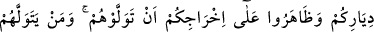
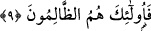

Kılıcın ülke ırmağına akan sudur,
O halde adâlet ağacını dik, kötü isteklilerin kökünü kaz!
9. Allah, yalnız sizinle din uğrunda savaşanları, sizi yurtlarınızdan çıkaranları ve
çıkarılmanız için onlara yardım edenleri dost edinmenizi yasaklar. Kim onlarla dost
olursa işte zâlimler onlardır.
“Allah, yalnız sizinle din uğrunda savaşanları” ve onun nurunu söndürmeğe
çalışanları, “sizi yurdunuzdan çıkaranları ve çıkarılmanız için onlara yardım
edenleri dost edinmenizi yasaklar.” Îman edenleri yurtları olan Mekke’den çıkaranlar,
Mekke halkından olan zâlimler ve ileri gelen azgınlar; onların çıkarılmalarına yardım
edenler de Mekke’nin diğer müşrikleridir. En tevellevhüm cümlesi, ism-i mevsûlden
bedel-i iştimâl olarak “Allah Teâlâ sizi yalnız onlara dostluk etmekten yasaklar”
anlamındadır.
“Kim onlara dost olursa işte zâlimler onlardır.” Hem dostluğu düşmanlığın yerine
koydukları hem de kendilerinin azaba uğramalarına sebep oldukları için zâlimdirler.
Allah düşmanlarına dostluk besleyenin hesabı ise daha büyük, böyle dostluğun sebep
olduğu bozgunluk ve fesad daha da çoktur. Bu zâlimliğin ne kadar çok büyük olduğunu
ifâde için haberden önce munfasıl zamiri getirilerek bir hasr/özelleştirme mânâsı
oluşturulmuştur. Haber olan zâlimûn kelimesinin cemi/çoğul olarak gelmesi mübtedânın
mânâsına itibarladır. Allah bizi ve sizi fânî olanı değil, bâki olanı isteyenlerden kılsın!
Fakîr (Bursevî) der ki: Açıklaması yapılan son iki âyetin karşılaştırılmasında şöyle
denilebileceği açıktır: İkinci âyetteki “onlara dostluk etmeniz” cümlesi birinci âyette de
zikredilmeliydi. Veya aksine çevirerek söylenebilir. Yâni birinci âyette olduğu gibi
“onlara iyilik etmeniz” cümlesi ikinci âyette de zikredilmeliydi. Yahut bu cümlelerin
ikisi de her iki âyette zikredilebilirdi. Ancak, akla dayanan delillere ve birbirini
güçlendiren nakle dayalı delillere göre, müslümanlara karşı savaşsın savaşmasın kâfire
dostluk beslemek asla câiz değildir. İyilik yapmak ise bunun aksinedir. Müslümanlara
karşı savaşmayan inkârcıya iyilik yapmak câiz ise de, müslümanlara karşı savaşan
kâfire dostluk yapmak câiz olmadığı gibi iyilik yapmak da câiz değildir. Bu duruma
göre, iyiliğin fiili bakımdan açıkça yapılmasının câiz olduğu bildirilen yerde dostluk
yapmak zımnen yasaklanmıştır. Dostluk yapılması yasaklanan yerde iyilik yapılması da
zımnen yasaklanmıştır. Müslümanlara karşı savaşan inkârcıya düşman olmanın bir
sonucu olarak ona iyilik yapmak câiz değildir. Denilirse ki, kötülük yapana karşı iyilik